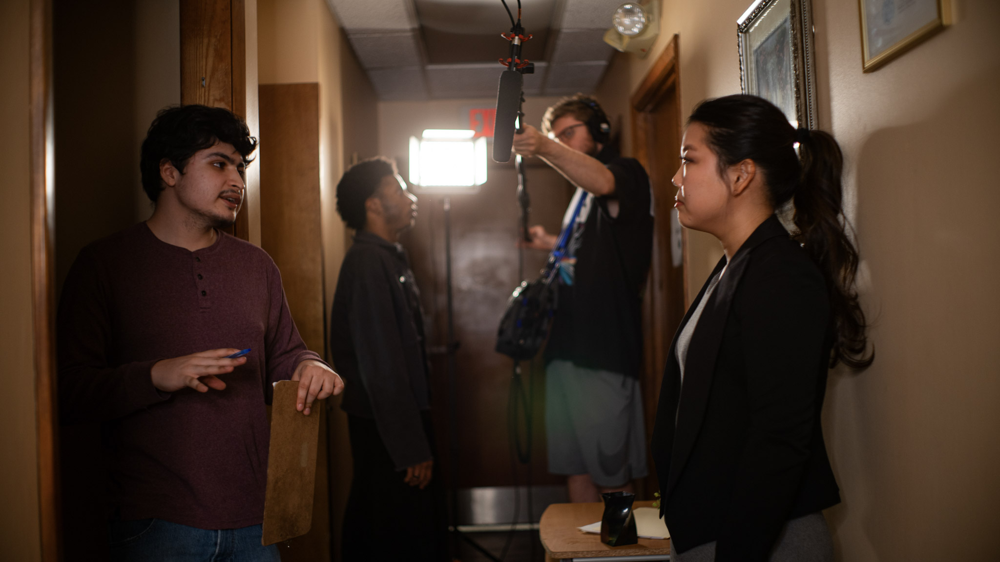

About Me

Hello! I am Erick Arias, a film student and aspiring sound mixer. I've been on a numerous amount of student sets, and indie projects. I specialize in all areas of sound, with a huge focus in on-set location sound. I am highly recommended by peers at my university, as I take great care when sound mixing. I'm easily able to work with or without a separate boom operator. On set, I'm always ready to adjust and work with the rest of the crew.
My Gear/Kit
Currently I'm running a Sound Devices-633 as my main recorder. I have several L-mount batteries for it, along with the approved Sound Devices 64gb SD card, and the matching Compact Flash card. I dual record on every project and create my own pre-approved backup so you'll never lose a file. I have two UWP V-1 Sony Wireless lavs and my own rechargeables to keep them running. For boom, I run a Sennheiser mkh416 and have my own built-in cable pole with a sturdy shockmount. For headphones, I run a classic pair of Sony MDR 7506s.